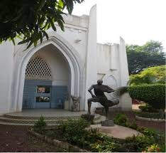

Description et Historique

Historique
Créé en 1990 pour sauvegarder le patrimoine matériel de la région de l'Ouest, il porte le nom d'un grand chef coutumier local.
Description
Ce musée abrite une riche collection d'objets d'art, de masques traditionnels, d'outils anciens et d'armes. Sa cour extérieure présente des reconstitutions grandeur nature d'habitats traditionnels Bobo et Peulh.